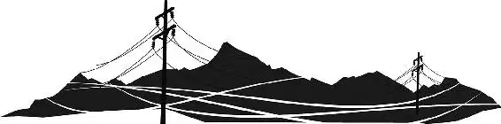

In a moment, the town was swarmed with reporters, photographers, and camera vans. The reporters jostled Sally out of the way as they descended onto Lightning, asking him questions a mile a minute.
One reporter barked, “Did you have a nervous breakdown, Lightning?”
“Look, Lightning’s wearing whitewalls!”
“Are your tires prematurely balding?”
“Stickers?” Sally called. “Lightning?” But her voice was lost in the confusion of the crowd.
“Lightning!” shouted a TV reporter. “Will you still race for the Piston Cup?”
“Sally?” Lightning called. “Sally? Sally!” He searched for the Porsche, but he couldn’t find her in the chaos.
Just then, a truck horn blared. It was Mack! He drove toward Lightning, shoving reporters out of his way.
“You’re here!” Mack cried. His voice was thick with tears. “Thank the manufacturers you’re alive! Oh, you are a sight for sore headlights. I’m so sorry I lost you, boss. I’ll make it up to you.”
Mack unhooked the trailer and held back the press so that Lightning could get inside.
“Mack,” Lightning said in a dazed voice, “I can’t believe you’re here.”
“Is that the world’s fastest racing machine?” boomed a familiar voice.
“Is that Harv?” Lightning asked.
“Yeah, he’s in the back,” Mack replied.
Then Mack turned to the reporters. “Get back, you oil-thirsty parasites!”
“Harv!” Lightning called into the trailer. “Harv?” “Kid! I’m over here.”
A speakerphone slid easily from the side of the trailer.
“How ya doin’, buddy?” Lightning asked into the microphone.
“I’m doing great!” Harv exclaimed. “You’re everywhere—radio, TV, the papers. What do you need me for?”
Then the agent’s voice turned serious. “That’s just a figure of speech. You signed a contract. Where are you? I can’t even find you on my GPS.”
“I’m in this little town called Radiator Springs,” Lightning explained excitedly. “You know Highway Sixty-six? It’s still here!”
“Yeah, great, kiddo,” Harv said, cutting off Lightning. “Playtime is over, pal. While the world’s been tryin’ to find you, Dinoco’s had nobody to woo. Who they gonna woo?”
Lightning knew the answer to that one. “Chick.”
“Bingo,” Harv said. “Mack, roll the tape.”
The TV screen glowed blue, showing footage of Chick standing next to Tex Dinoco. Chick was surrounded by reporters and gorgeous female fans. He even had a new dark thundercloud with a giant C painted on him.
“Show us the thunder!” the reporters begged.
“Yeah, give us the thundercloud!”
“You want thunder?” Chick demanded, basking in the attention. “You want thunder? Ka-chick-a! Ka-chick-a! Ka-chick-a!”
“Hey,” Lightning said in horror, “that’s my bit!”
“You gotta get to Cali pronto,” Harv yelled. “Just get out of Radiation Stinks now, or Dinoco is history, you hear me?”
“Yeah, okay,” Lightning said slowly, “just give me a second here, Harv.” Lightning drove over to Sally, who was parked by the side of the trailer.
They looked at each other in silence for a moment. Lightning spoke first. “Sally, I—I want you to— look, I wish …” He sighed and looked at the ground. He didn’t know what to say.
“Thank you,” Sally said sincerely. “Thanks for everything.”
Lightning looked up at her. “It was just a road.”
“No—it was much more than that.” Tears welled up in Sally’s eyes.
Mack charged over, interrupting them. “We gotta go,” he said. “Harv’s going crazy. He’s gonna have me fired if I don’t get you in the truck now.”
“Mack, just hold it,” Lightning begged. He looked at Sally, pained.
“You should go,” Sally told him.
Lightning started to speak, but Sally cut him off. “I hope you find what you’re looking for,” she told him. Then she backed away and turned, pushing through the press.
“Sally … ,” Lightning called. “Sally!” But it was too late. She was gone.
“C’mon,” Harv urged. “Let’s go.” The agent coaxed as Lightning backed into the trailer. “That’s right, kid, let’s go. You’re a superstar. You don’t belong there anyway.”
Lightning looked out at the soft neon glow of the town lights one last time before the ramp shut behind him.
As Mack hauled Lightning out of town, the folks of Radiator Springs watched sadly. Just then, a reporter rolled up to Doc.
“Hey, are you Doc Hudson?” she asked. “Thanks for the call.”
Sally’s jaw dropped. “You did this?”
“It’s best for everyone, Sally,” Doc said.
“Best for everyone?” Sally demanded. “Or best for you?”
“Hey, guys!” shouted a reporter. “Lightning’s leaving in the truck!”
The press raced after him, leaving the town as suddenly as they had arrived.
“I didn’t get to say good-bye to him,” Mater said sadly.
One by one, the townsfolk went back to their shops. Alone, Doc sat under the town’s traffic light as they all turned off their neon. Radiator Springs was quiet and dark once again.
